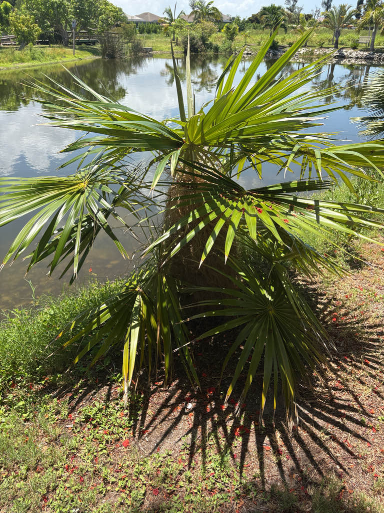

- The entire known wild population of this palm — in the world — numbers somewhere between 60 and 130 individual trees, all within one small area of western Cuba. The palm you're looking at is far safer here than its species is anywhere in the wild.
- In collector and landscape circles it has earned the nickname 'the Cousin Itt palm' — a comparison any Addams Family fan will immediately understand the moment they round the corner and see it.
- The shaggy beard is not just a costume. In the exposed, seasonally scorching savannas of western Cuba, the dense fiber coat insulates the slender trunk against blistering heat and cold snaps — it is a genuine survival feature, not ornament.
- In Cuba, locals historically harvested the trunk fibers — so soft and springy — to stuff mattresses and pillows. The alternate name Palma Petate (woven-mat palm) hints at the same tradition: this palm has been furnishing Cuban homes for generations.
The Old Man Palm is endemic to Cuba — found nowhere else on earth in the wild. The nominate subspecies (subsp. crinita) is restricted to the Artemisa province in western Cuba, while a second subspecies (subsp. brevicrinis, the Short Hair Old Man Palm) is native to central Cuba and has shorter, less dense trunk fibers.
In its natural habitat it grows in seasonally flooded savannas and coastal scrublands, typically on serpentine or quartzitic soils with low nutrients — conditions most palms would struggle with.
It arrived in South Florida cultivation as a collector's specimen, valued precisely for its bizarre, eye-catching appearance, and has gradually spread into botanical garden collections and private tropical landscapes throughout Zones 10–11.
- The wild population of Coccothrinax crinita is Critically Endangered on the Cuban Flora Red List, with estimates of only 60 to 130 trees surviving in the wild. Habitat loss and unsustainable harvesting of its fibers for rope, brooms, mattress stuffing, and hats have pushed the species to the edge. It is considered one of the most endangered palms in the Americas.
- The 'beard' is not simply decorative — it is a structural feature produced by each new leaf. When a new frond emerges, it brings with it a long skirt of pale brown fibers that drape down and accumulate around the old leaf bases, eventually enveloping the trunk completely. On a mature tree, this fibrous coat can be several inches thick, making the narrow trunk look far more substantial than it is.
- When the palm eventually reaches full size, the lowest fibers are gradually shed by wind, slowly revealing the slender trunk beneath.
- The slow growth of this species is not just a gardener's frustration — it has real conservation consequences. A palm seedling may take five to eight years to develop a handful of leaves, and a decade or more to begin flowering. In the wild, that means each individual represents an enormous investment of time, and losing even a few trees to grazing or fire is a serious blow to the population.
In its native Cuban savanna habitat, the Old Man Palm's small dark fruits are eaten by birds and small mammals, which disperse the seeds. The fibrous trunk accumulation also provides microhabitat — crevices and moisture-retaining structure that shelters small invertebrates.
In cultivation, the nectar-producing flowers may attract generalist pollinators including bees and small insects, though wind is cited as the primary pollination mechanism. The wildlife value of this palm in a Florida garden setting is modest compared to native species, but its value as a living conservation specimen is genuine.
Seed only — no suckering or vegetative reproduction. Germination is slow and requires warmth; seedlings spend their first years building root mass before developing a visible trunk.
Small cream-white flowers borne on long stalks that emerge among the leaf bases and droop below the crown. The species bears hermaphroditic (bisexual) flowers, meaning each flower contains both male and female structures — a single isolated tree is fully capable of setting fruit on its own. Flowering occurs primarily in spring and summer.
Small, round, wrinkled berries, about ¼ to ¾ inch in diameter, ripening from green to dark purple or black in late summer.
Palmate (fan-shaped), nearly circular, up to 5 feet in diameter, with approximately 38 stiff segments that have split tips. Deep green above, silvery-gray beneath. The petioles are unarmed.
Solitary, slender — only 3 to 8 inches in true diameter — but completely obscured by a thick accumulation of long, pale brown woolly fibers. The beard grows thicker with age; on old trees it can be several inches deep before wind eventually strips the lower portion.
The beard is the first thing anyone notices — that dense, shaggy mass of pale brown fiber covering the trunk from base to crown. Look up into it and you can see how each layer corresponds to an old leaf base. The fronds themselves are worth a second look: deep green on top, and turn them over to find a contrasting silvery underside.
In spring and summer, look for long drooping flower stalks hanging below the crown. Because the flowers are bisexual, this single specimen is fully capable of producing its own fruit and viable seeds without needing a partner nearby.
No toxicity to people or dogs is documented for this palm. The small dark fruits are not a human food source, but they are harmless — otherwise there is nothing here that warrants a caution.
Unlike some dioecious palms, Coccothrinax crinita bears hermaphroditic (bisexual) flowers — each flower contains both male and female structures, so a single specimen can produce viable seed independently.
The historic synonym Thrinax crinita appears in older literature. The current accepted name is Coccothrinax crinita.


- © Randall Carter (CC-BY-NC), via iNaturalist